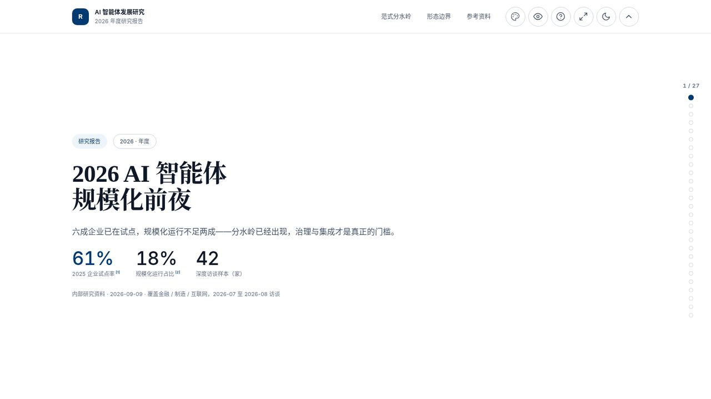
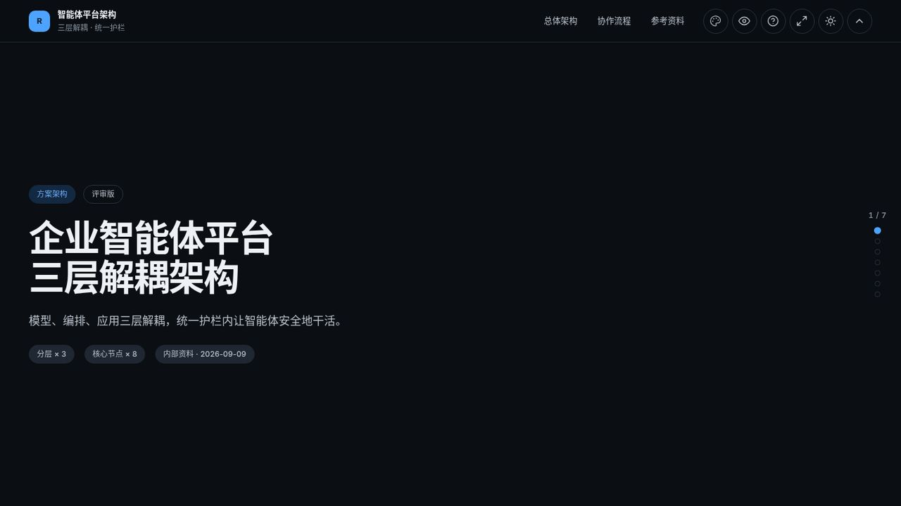
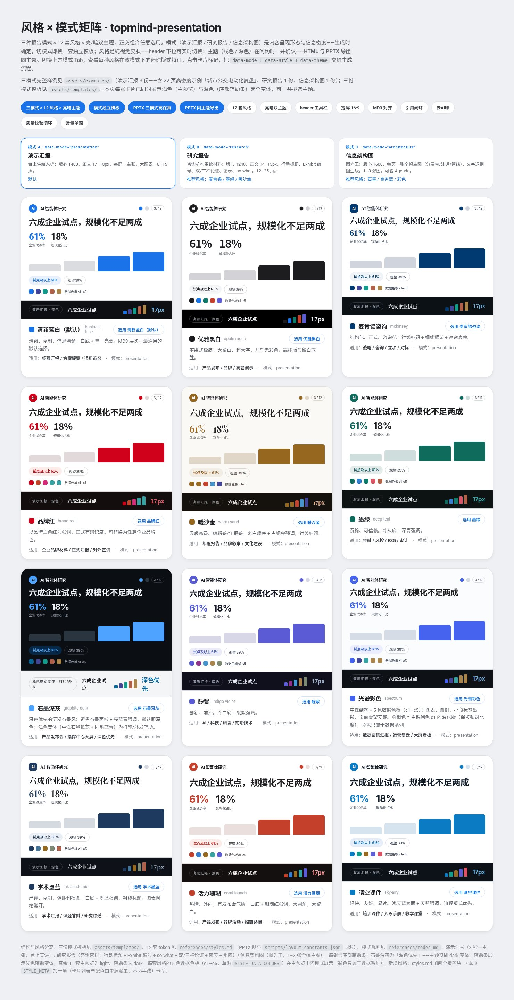
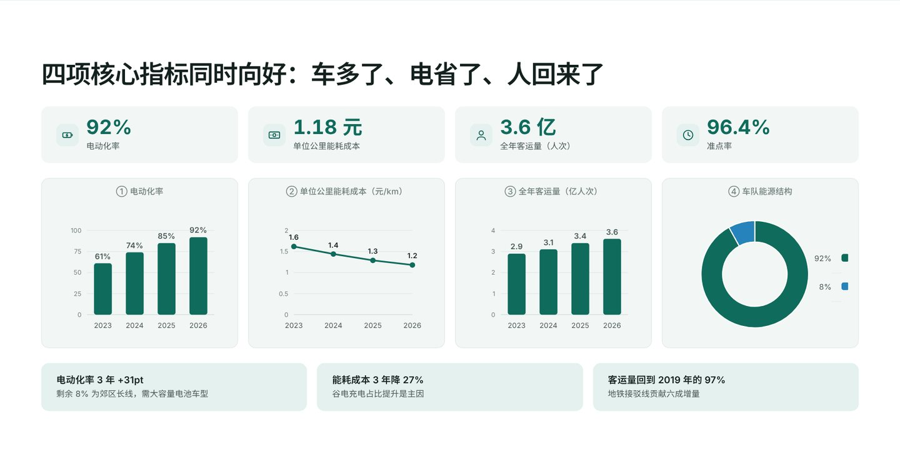
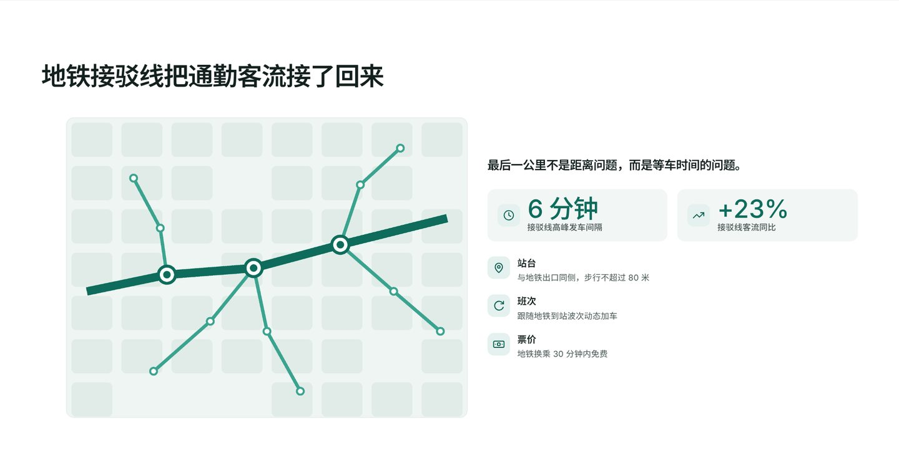
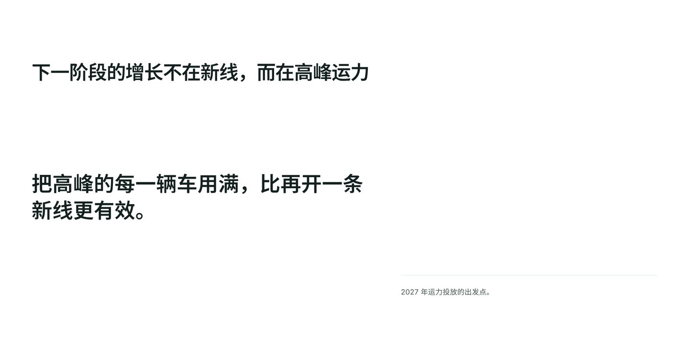
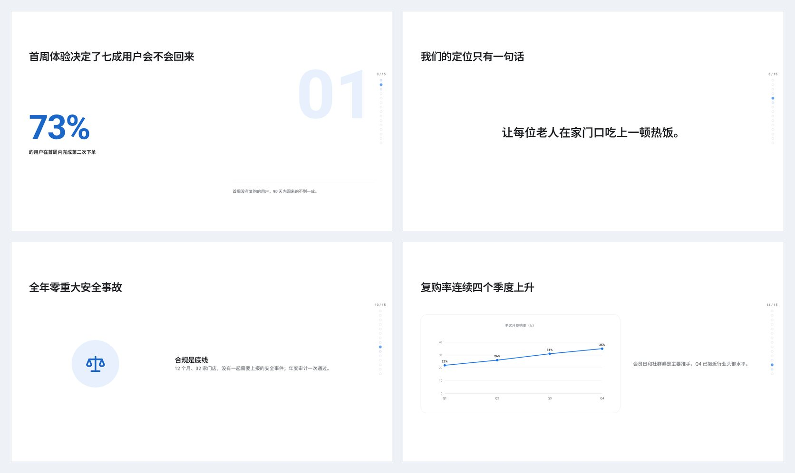
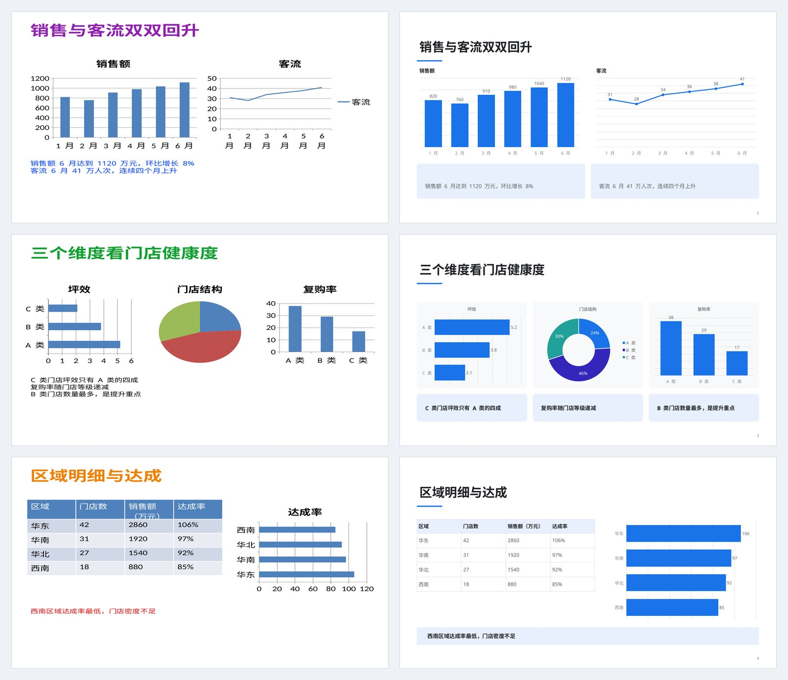

三种成稿
先定模式，再写页。
下面三张是仓库自带的示例报告首页。
A · 演示台上讲的演示，每屏一个主张。 
B · 研究研究报告，图表带来源和结论条。 
C · 架构架构说明，以拓扑、泳道和分层图为主。
12 套风格
同一份文件里切换风格。
亮色适合外发，深色适合大屏。下面是三种模式和12 套风格的矩阵。

多图表与高密度
一页放下几张图，仍然一眼读懂。
取自仓库里 22 页的「城市公交电动化复盘」示例：仪表盘、杂志版和简单页交替出现，信息密的页后面跟一页留白。

仪表盘4 个关键数字、4 张图和一行解读，配色、坐标和图例共用。 
杂志版一张插图、一句观点、两个数字和带图标的要点。 
简单页一个数字、一句解释，其余留白。
简单版式
一个数字、一句话或一个图标，就是一页。
简单页有 12 种变体：数字、观点、段落、图标和单图，可以左对齐、居中或分栏。下面是其中四种。

已有 PPT 美化
只换版式，不改一个字。
原稿只读。新稿出来前，每个字、每个数、图表数据、图片和演讲者备注都与原稿逐项核对。一页多图改成仪表盘或双图对照，表加图改成半表半图。

HTML 顶栏工具栏
打开就能用的快捷键。
交付的 HTML 顶部自带工具栏，下面是各按钮和对应按键。
T亮暗主题
浅色适合外发，深色适合大屏，按文件记忆。
☰风格选择
12 套风格实时切换，只改视觉，不动内容。
P预览 PPTX
按页序列预览，可复制提示词回对话来导出。
HPPT 生成指引
说明导出 PPTX 的两条通道与环境依赖。
F全屏
沉浸式演示，方向键翻页。
B收起工具栏
折叠成迷你条，位置按文件记忆。